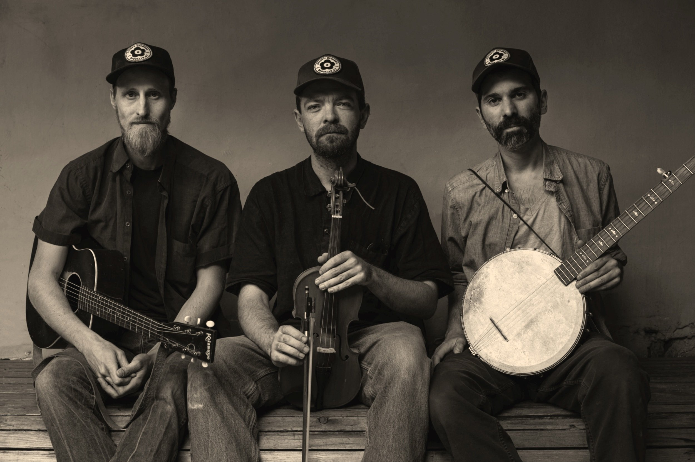

May 11
Presents:
The Downhill Strugglers
The Down Hill Strugglers is an old time string band. They have released albums on Smithsonian Folkways Recordings and Jalopy Records and are featured on the soundtrack to the Coen Brothers film, "Inside Llewyn Davis" produced by T-Bone Burnett, Dreamland with Margot Robbie as well as other films and video games.
The band formed while hanging out at the home of their mutual friend Peter Stampfel of the Holy Modal Rounders, where they also met bandmate and mentor John Cohen of the New Lost City Ramblers. Their music reflects and extends the strong feeling and diversity of sounds found on old commercial and field recordings from as early as the 1920s and 1930s. The Down Hill Strugglers carry forward the sounds of the old, rural America.
“The Down Hill Strugglers bring back the true spirit of Old Time Music, where every singer invented his own performance. Besides being excellent musicians on fiddle, banjo and guitar, pump organ, harmonica, etc., they sing with the high voices that echo the sounds of young artists heard on the old 78s, evoking the spirit of the “Golden Era” of recording, and the mystery of their own identity.
They have built their repertoire from some of the best music of the past and they keep it alive and lively. They have found resonance with the intensity of rural music, while delighting in the nuances that preserve the individual uniqueness of the genre. This is music that will keep your mind dancing.
The Down Hill Strugglers are reaching for new musical highs, and they play the kind of music I want to hear.”
- John Cohen, New Lost City Ramblers.
$20.00 online
$24.00 at the door
Address: 67011 hwy 63, Lake City, MN 55041
ONLY PARK ON EAST SIDE OF 82 (general store side of the gravel road)
Look for parking attendant in yellow vest. IF YOU DONT SEE ATTENDANT YOU ARE PROBABLY IN WRONG SPOT
refer to picture on homepage if confused
The music venue itself is only accessed via staircase. The show will be played over speakers on the main floor for anyone who cannot or wishes not to go upstairs.
Tickets are required only for guests that go upstairs.
Sorry, no alcohol will be served. We hope to get that back soon.
Other than that you can expect our usual lineup of popcorn, pop, cookies, etc.
phone: 651-448-0889
hopeschwen2299@gmail.com